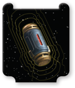

BLAZE
When this object is placed, fit the guides to the tab of the Blazer Bomb.

Blazer Bomb
After this obstacle is placed, place a fuse marker on it.
- During the End Phase, remove each Blaze with no fuse markers, then remove one fuse marker from each Blaze.
While a ship moves, if it moves through or overlaps a Blaze obstacle, it suffers the following effect:
- After the move is resolved, roll one attack die. On a or result, the ship suffers one damage; on a result, it gains one stress token. Then the ship skips its Perform Action step this round.
After a remote relocates, if it relocates so that it at range 0 of a Blaze obstacle, it suffers one damage.
While a unit defends, if the attack is obstructed by a Blaze, it rolls 1 additional defense die.